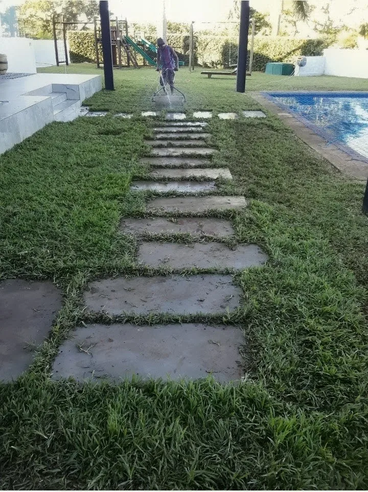

Water thoughtfully
Water thoroughly after laying and maintain suitable moisture while checking how your lawn responds to the weather and soil.
Aftercare guidance
The first weeks matter. Consistent moisture, thoughtful use and the right early care help your instant lawn settle into its new soil and begin establishing.
Watering · Early use · Establishment

The establishment period
New turf has recently been lifted and moved, so it needs prompt and consistent watering. The soil beneath should remain suitably moist while the roots begin growing into it.
Weather, soil, shade and exposure all affect how much water a lawn needs. Rather than following one rigid schedule, check the lawn and soil regularly and ask for guidance suited to your conditions.
Ask about your lawn

Early lawn care
Water thoroughly after laying and maintain suitable moisture while checking how your lawn responds to the weather and soil.
Limit unnecessary foot traffic and avoid moving or pulling at the turf while the roots are beginning to establish.
Wait until the lawn is ready and growing, then avoid cutting too short. Ask for guidance if you are unsure about timing.
A simple care routine
Give the completed turf a thorough watering as soon as possible.
Monitor both the grass and the soil beneath, especially in warm or dry weather.
Limit heavy use and look for signs that the lawn is settling into its new base.
Adapt care to conditions and ask for advice when something looks uncertain.
Aftercare FAQs
There is no single schedule for every garden. New turf needs consistent moisture, but weather, soil and exposure matter. Water thoroughly after laying and contact us for guidance suited to your lawn.
Occasional careful access may be necessary, but avoid unnecessary or heavy traffic while the turf is settling. Keeping activity low helps protect the joins and soil contact.
Wait until the turf is establishing and growing rather than mowing too early. When ready, use a suitable height and avoid removing too much leaf growth at once.
Changes can have several causes, including moisture, heat or soil conditions. Take clear photos and contact the team promptly so the situation can be discussed.
Related services
Transform your space with real grass and immediate coverage.
Learn moreGive roots a clear, level foundation from the beginning.
Learn moreCareful fitting and good soil contact for your new lawn.
Learn moreNeed lawn guidance?
Contact GRASS EN ALL with your lawn question or send a photo on WhatsApp.